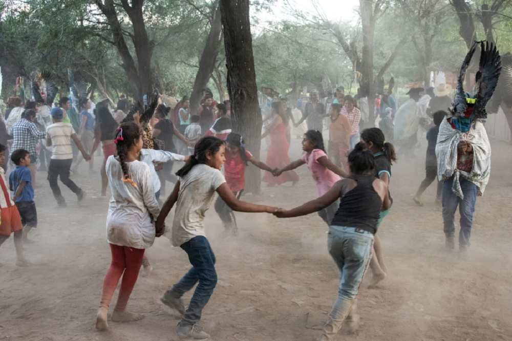

The pinguyo of the Ava people
Sketch 025
Home > Blog A Musician's Log > Sketch 025
The Ava, a Guarani-speaking people of the Bolivian and Argentine lowlands, preserved a complex musical tradition shaped by Amazonian, Arawak, Andean, and colonial influences despite centuries of warfare, displacement, and missionary intervention. Closely tied to rituals such as the aréte guásu, their musical heritage includes drums, flutes, trumpets, whistles, idiophones, and the singular turumi violin, all generally handcrafted by the performers themselves and embedded in ceremonial, social, and symbolic practices linking music, dance, memory, sexuality, warfare, and relations between the living and the dead.
The pinguyo is a fipple flute similar to the Andean pinkillo (pinkullo, pingullo), although with some very particular characteristics.
It is made from a segment of takuapúku cane about 30 cm long and 1-2 cm in diameter. Six finger holes are drilled on the distal half, positioned over a line made by removing a thin strip of bark. The holes are pierced with a red-hot iron, the first in the middle of the pipe, and the others equidistantly; the last one is drilled near the distal node. This node is pierced in the same way as the finger holes.
The fipple window is usually square and is cut with a knife, although sometimes it takes the shape of two Ws facing each other at their bases, similar to an hourglass, a characteristic of the pingullos of Ecuador. The wooden block that closes the proximal end and creates the air duct is curved, unlike other traditional South American recorders, whose cuts are usually straight.
Finally, a pair of small whistles called imémby (imbémbuy) of varying lengths are attached to either side of the mouthpiece. The imémby are made from turkey feather quills or thin reeds whose ends are beveled and filled with wax, leaving a slit or opening (made with a small piece of corn husk or cardboard) as a blowing channel. They serve to produce a pedal note and are the most distinctive feature of this recorder, shared by only a handful of South American instruments, including a traditional Bolivian pinkillo.
A widely used male instrument, it accompanies dances and recreational activities, especially during the aréte. Some Tapieté describe it as a "double flute" and call it tinguyu.
More information about these sound artifacts can be found in the free-access digital book Musical instruments of the Ava people, accessible through the "Digital books on music. Series 1" section.